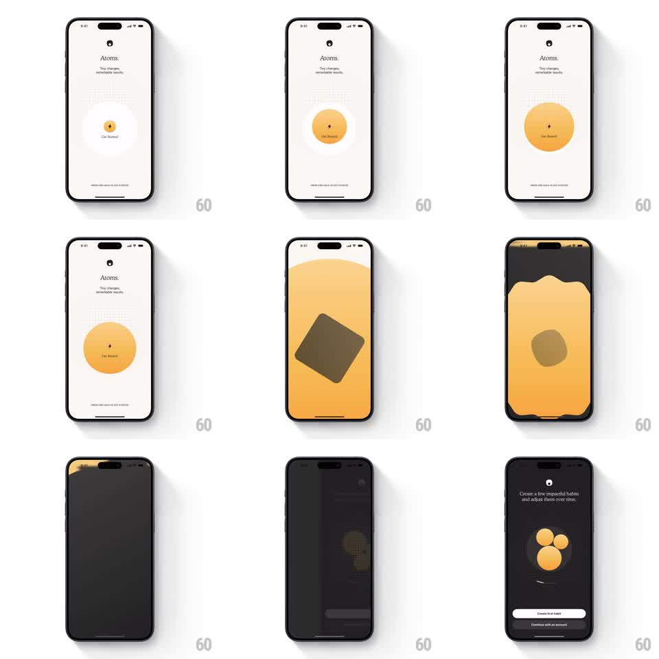

Media
Frame-by-frame

Rebuild this interaction 1:1: Atoms' long-press start - holding the "Get Started" button grows a warm yellow circle from its center until it sweeps across the whole screen, wiping the light launch screen into the dark habit-setup screen.

Rebuild this interaction 1:1: Atoms' long-press start - holding the "Get Started" button grows a warm yellow circle from its center until it sweeps across the whole screen, wiping the light launch screen into the dark habit-setup screen.
## Integration
Integration: stack-agnostic spec - springs given as stiffness/damping, timed motions as duration + curve; map every value to your framework and animation library of choice.
## Scene
Cream launch screen: "Atoms." wordmark, "Tiny changes, remarkable results." tagline, a small centered atom icon inside a dotted ring, "Get Started" label, and a "PRESS AND HOLD TO GET STARTED" hint. Destination: dark setup screen ("Create a few impactful habits and adjust them over time.") with three yellow bubble circles and "Create first habit" / "Continue with an account" buttons.
## Motion spec
Pattern: hold-to-fill circular wipe, ~1.2s hold + 800ms transition.
- Hold: pressing grows the yellow circle from the button center at a steady rate; releasing early shrinks it back (300ms, ease-out) - progress is not kept.
- Complete: at full charge the circle keeps expanding past the button, flooding the screen edge to edge (700ms, ease-in-out).
- Morph: as the yellow field covers everything, it splits into a dark background with yellow arcs sweeping to the corners (500ms), resolving to the dark theme.
- Settle: the three yellow bubbles pop in (scale 0.7 -> 1.05 -> 1, spring ~340/20, staggered 80ms) and the buttons slide up (300ms, +200ms).
## Calibration
- The wipe originates exactly at the button - it is the button becoming the screen.
- The light-to-dark flip happens mid-expansion, masked by the yellow field.
## Reduced motion
Hold completes with a 300ms cross-fade between screens.
## Don't miss
- The dotted ring around the atom icon pulses gently while idle (opacity 0.5 -> 1, 1.5s).
- The final screen is fully dark - no cream remnants at the edges.